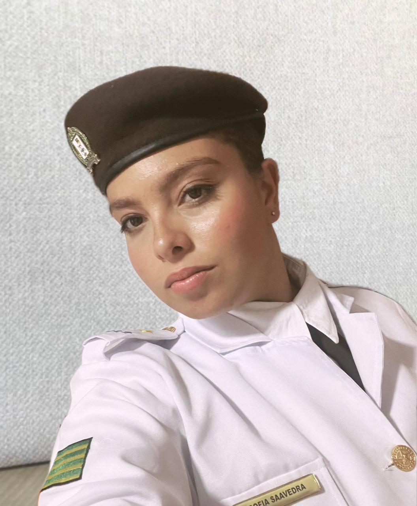

CONVITE DE FORMATURA
Com muita honra e alegria, convido você para celebrar o encerramento de um Ciclo de Vitória!
Queridos familiares e amigos,
Com o coração repleto de alegria, convido vocês a compartilharem comigo a alegria desta conquista. Após anos de aprendizado, desafios, choros, alegrias e superações, chegou o momento de celebrar não apenas uma formatura, mas sim um final de ciclo muito importante na minha vida. Depois de 5 anos no colégio Militar chegou a hora de encerrar mais uma página do meu livro da vida. Cada momento foi de grande aprendizado e de mudanças.
Este convite é mais do que um simples chamado: é um agradecimento a todos que fizeram parte de cada etapa e momento nessa caminhada. Cada lição, cada gesto de apoio e cada oração contribuíram para que este sonho se tornasse realidade.
Será uma honra tê-los presentes neste momento tão especial e importante da minha vida.
INFORMAÇÕES